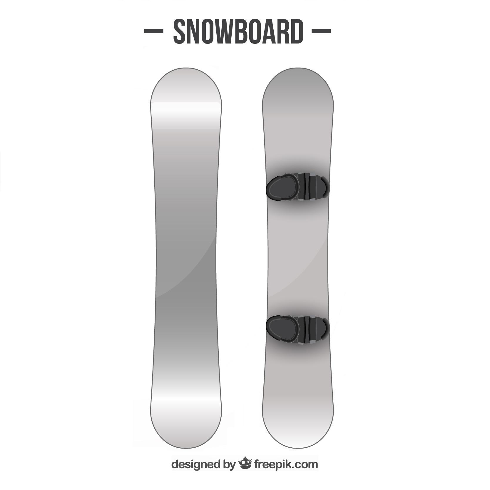

Ride - Manic 2012
Description
The Ride Manic snowboard lets you make the most of everything the mountain can muster, with LowPro™ rocker and smooth-riding Slimewalls® tech to keep you coasting.

Specifications
| Best use |
Snowboarding |
| Snowboard Style |
All-mountain |
| Snowboard Shape |
Directional Twin |
Full Description
- LowPro shape combines a mellow rocker in the front and a long, stable flat zone that extends into the tail; lots of surface area means lots of float on pow
- Tuned wood core incorporates high-energy "uppers" and vibration-absorbing "downers" for maximum snap and feel
- Pop Rods® technology utilizes carbon rods in the tip and tail, creating potent pop without adding stiffness; ideal for all freestyle maneuvers
- Carbon Array 3™ stringers in the binding zone channel power to the board for maximum control, regardless of your stance location
- Lightweight and forgiving, the top and base are wrapped in a web of stitched biaxial glass, which increases torsional stiffness and snap
- Durable, skate-inspired Slimewalls® sidewalls absorb impact and smooth the interaction between the board and riding surface
- Ride Manic snowboard features a Fusion 1500 extruded base that is wax absorbing and easy to repair
- Please note: base colors may vary